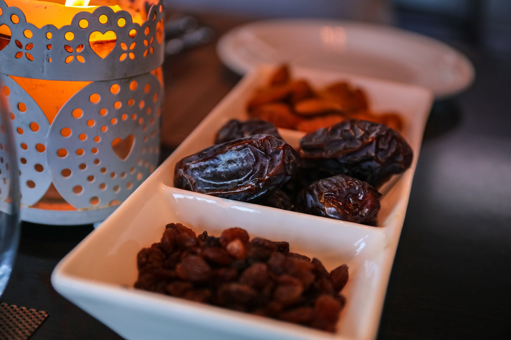
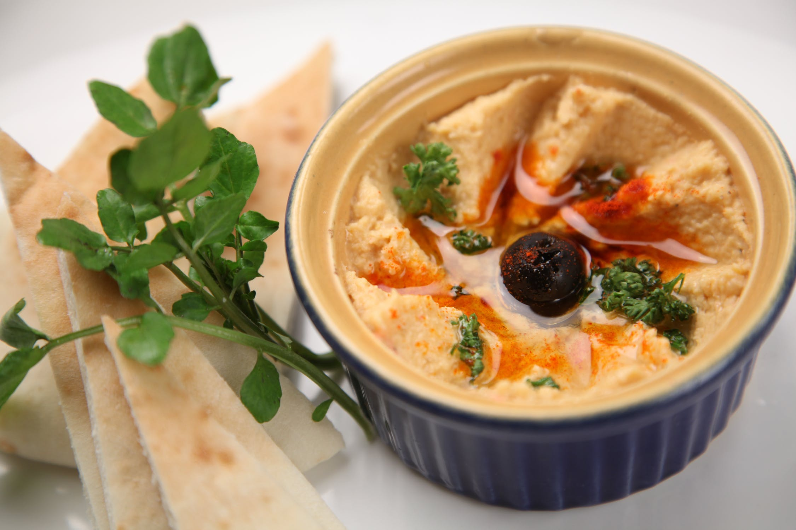
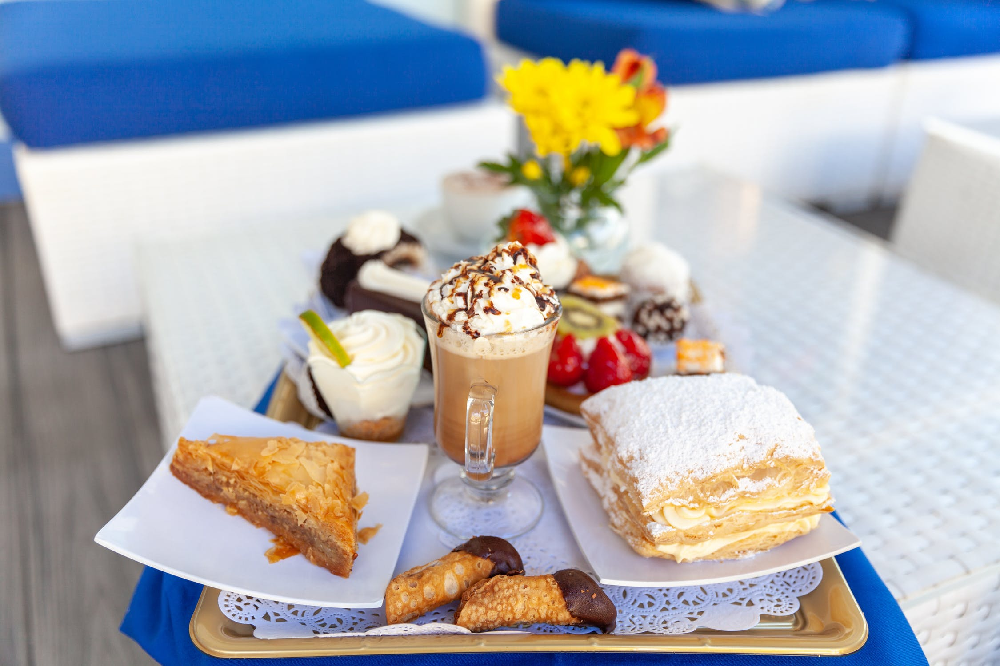
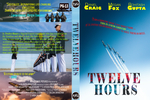

Dubai has become one of the world's most popular destinations for tourism. From state-of-the-art technology and infrastructure, the Burj Khalifa - world's largest freestanding structure, tax-free living, shop in exclusive and designers stores to staying in luxurious hotel - Burj Khalifa. Apart from these attractions, Dubais consists of beaches (Jumeirah Beach, Umm Suqeim Beach, Al Mamzar Beach Park), parks (Dubai Desert, Ras Al Khor Wildlife, Wonderland) and places (Downtown, Palm Islands) for sightseeing.
The cultural ideology is based on Islamic Civilization. Throughout the year, Dubai celeberates various festivals:
- Dubai Shopping Festival (January-Feburary)
- Dubai Marathon (January-Feburary) - Charitable Funding Event
- Omega Dubai Desert Classic (January-Feburary) - Popular Golfing Event in Middle East
- Dubai International Jazz Festival (Feburary-March) - Music Festival
- Dubai Tennis Championships (Feburary-March)
- UAE (Abu Dhabi) Desert Challenge (March-April) - Race from Abu Dhabi to Dubai
- Art Dubai (March-April)
- Dubai World Cup (March-April) - World's Richest Horse Race (10 million dollar prize)
- The Bride Show (April-May) - Events on the theme of Weddings
- Festival of Taste (April-May) - Food Festival
- Dubai Summer Surprises (June-August)
- Motexha Textile Show (September-October)
- Dubai Rugby Sevens (November-December)
- Dubai International Film Festival (November-December)
- National Day Festival (November-December)
Dubai Economy
Apart from Oil industry, Dubai economy revenue generates from various other industries included petroleum, natural gas, tourism - resulted after real-estate market boomed in 2004-2008. In addition, Dubai has been an important port for Western manufactures. It has become the world's third largest trading hub of Diamond along with industrail ventures in energy production.Dubai Statistics
| Country Population | 9.4 million |
| City Population | 3.3 million |
| Continent | Asia |
| Geography | Situated on the Persian Gulf coast of UAE, shares borders with Abu Dhabi in the south, Sharjah in the northeast, and the Sultanate of Oman in the Southwest. |
| Climate | Hot Desert Climate varies high of 41°C during the day to a low of 30°C overnight. Winters vary an average of 24°C during the day to a low of 14°C overnight. |
| Demographic | 25.2697°N 55.3095°E |
| Area | 1,588 sq mi (4,110 km2) |
| Population Density | 408.18/km2 |

Dates
Dates have been cultivated for more than 7,000 years and are considered sacred throughout ancient civilizations, so it is no surprise that they are eaten most during Ramadan. The fruit has sustained generations and has become an integral part of the UAEs heritage and identity. Also, according to Islamic tradition, a date tree was said to be the “Tree of Life.” Dates are incredibly rich in iron, which is excellent for building the quality and strength of the blood.

Hummus
A dish consumed by pharaohs, warriors and sultans, the hummus has come a long way to become the traditional and symbolic dish in Arab cuisine. Roughly translated, hummus means “chickpeas”, but the dip we eat today is more accurately known as hummus bi tahini or tahina. It is typically made by blending chickpeas (garbanzo beans), tahini (ground sesame seeds), olive oil, lemon juice and garlic. It is Vegan, Gluten-free, High in fiber, Protein and truly delicious!

Baklava
Baklava is a rich, sweet pastry featured in many cuisines of Dubai. It is made of layers of phyllo dough filled with chopped nuts, such as walnuts, almonds, and sweetened with syrup. It is said that the Sultans presented trays of baklava to the Janissaries every 15th of the month of Ramadan in a ceremonial procession called the Baklava Alayı. Though, the origin of baklava has continued to be disputed, since many ethnic groups claim this delicious, exotic dish as their own.

Rohitash Gupta
Hussain Al Jassmi
Hussain Al Jassmi is a well-known Emirati Singer in the Middle East.
He was born in Sharjah, Khorfakkan on August 25, 1979. He is known for his
Arabic and Khaliji music and received the
Murex d'Or award for Best Arabic Male Singer in 2008.
Al Jassmi performed at verious concerts around the world. He performed at
Vatican's annual Christmas concert as one of his well-known performance
and becoming the first Arab to perform there. He had performed in different
parts of Middle East like UAE, Saudi Arabia, Kuwait. He has achieved over
730 million views on Youtube.
- Banner Image - Top Section
- Burj Khalifa - About Section
- Desert - About Section
- Copyright Policy - unsplash
- Dubai Information - About Section
- Dubai Information - About Section
- Dubai Festival - About Section
- Dubai Economy - About Section
- Dubai Population,Climate,Geography Information - About Section Table
- Dates - Cuisine Section
- Hummus - Cuisine Section
- Baklava - Cuisine Section
- Hussain Al Jassmi - Celebrities Section